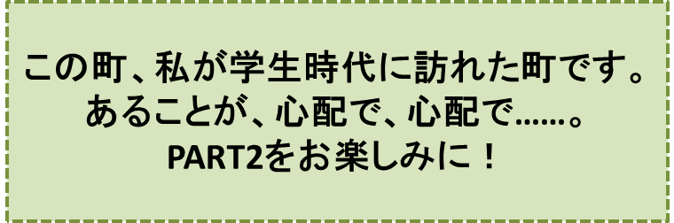

『リンゴ並木のある町』の巻
笠原正雄
信州に、日本でも指折りの美しい町があります。
大自然のふところ――日本アルプスの山々が遥かに見上げられ、雪解けの水が、谷間から溢れ出てきて、やがて一筋の川となるところ――に抱かれた町です。
大気はあくまでも澄み渡り、空は、目の覚めるような青空。丘に燃える若草は、お日様を一杯に浴びて輝きます。
アスファルトの大通りが、大自然と見事な調和を保ちながら力強く走り、その両側にゆったりと立ち並んでいる純白の建物は、回りに沢山の緑の樹木、色とりどりの花を伴なって、人々の目を楽しませてくれています。大都会の建物のように圧倒するほどの大きさはないけれど、人々の心に、圧倒的な建築美を強く訴える、という点では、この町の建物に軍配が上がるでしょう。
ここで暮らし、ここを旅する人達は、雲一つなく晴れ上った朝、これらの真っ白な建物が、雪のように輝くのを見ると、どんな色にもまして白で良かったと思い、時の経つのも忘れて、いつまでも眺めているのでした。
目を転じて、町の大広場を見ると、教会の黄金色の建物が、目に入ります。その建物からは、毎朝、鐘の音が静かに響き渡ります。人々は
“おっはよう！” “おっはよう”
と鐘の音(ね)に応えます。
この美しい町で、人々が一番愛し、自慢にしているもの……、それこそは、子供達の作ったリンゴ並木です。
リンゴ並木は、町の大通りを貫くように大きく成長し、子供達の胸は、それとともに、希望に一層大きく膨らみます。大通りを歩く人々は、赤、青、黄色の見事なリンゴ達を見て、思わず口もとをほころばせます。
晴れ上がった日曜日には、何人かが集まると、たちまち輪になって、リンゴの木の周りを手をたたき、歌を唄いながら踊ります。
この町を訪れる人々は、誰もが
“すばらしい! 日本一のリンゴ並木だ！”
と感嘆の声を上げてしまうでしょう。
このリンゴ並木は、「リンゴ会」の子供達によって育てられています。
会長さんは中学二年の三郎です。
三郎は勿論のこと、リンゴ会全ての子供達は、アルプスおろしの空っ風に鍛えられて、強い身体を持ち、美しい自然の中で育てられ、明るく、リンゴのように輝くほっぺたが自慢の子供達です。
勇敢という言葉がぴったりの小学五年生の章介、元気一杯はつらつ小学六年生の修も、リンゴ博士の異名をとる中学二年生の晴子も誰もかも……“自然の子”なのです。
「リンゴ会」の子供達の愛情を、たっぷり受けて、リンゴ並木は、今年も見事な実を実らせ、人々の目を楽しませています。
最初の年のことでしたが、子供達は、自分達が一生懸命育ててきたリンゴ並木が、余りにも見事に成長しましたので、誰もがその実をとるのをはばかり、赤、青、黄色の実をその緑の葉の中に、いつまでもそのまま置いておこう、と考えたほどでした。
……しかしリンゴ達は、その枝を離れて子供達の手に持たれたとき、より一層美しく輝くものですよね。
「リンゴ会」の子供達は、毎週の土曜日、日曜日の午後、リンゴを取ることに決めました。
何故なら一週間の勉強が終わった後ですから、リンゴの木達が
“待ってましたよ！”
と大きな拍手で迎えてくれるようでしたし、いつまで遊んでいても
“さぁ、もうそろそろ、勉強しましょうね”
と、呼びかけも、しないからです。
よく晴れた土曜日の午後ほど、楽しいときはありません。思い思いに出来るだけ大きなリンゴを取って、皆で輪になり、歌を唄いながら、リンゴ並木の周りをぐるぐる、ぐるぐる回ります。
回り回って疲れた時には、もぎ取ったばかりのリンゴの甘酸っぱい実が、彼らの喉を心地良く潤してくれます。
♪♪♪♪コーヒーブレイク♪♪♪♪

TOPページへ PART2へ